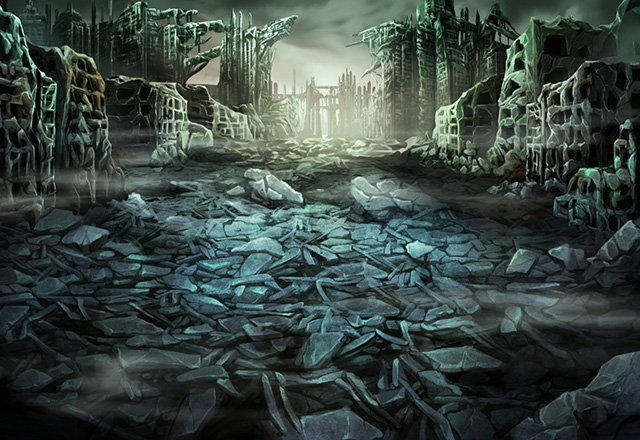

ティリス
ねえねえ、もしかしてShou-chan、 まさかここで封印を解くつもりじゃ……。
アーク
ああ、俺はもう迷わない。 Shou-chanたちに教わったんだ。
アーク
どんなことがあろうとも自分の信じた道を 突き進み続けるということをな。
アーク
だが…だが、それでも俺はイリアを 助けたい！
カロン
この地に張られた封印は お前を拒絶し続けるだろう。
カロン
その途中でお前が諦めてくれることを 私は願っているが
カロン
お前以上に諦めの悪い人間が 現れたようだからな……。
カロン
ならば、ここにいることも 自然なことと言えるだろう。
ティリス
私は本当はShou-chanと 海に行くつもりだったんだけど
ティリス
Shou-chanが 強引に連れて来るから……。
ティリス
でも、Shou-chanは わかってたんだね。
アーク
しかし、これは俺の問題で お前は自分のやるべきことが……。
カロン
この者に何を言っても無駄なのは お前もわかっているだろう？
カロン
この者たちの力があれば 可能性がゼロではなくなるかもしれない。
アーク
Shou-chan、ティリス、 俺に力を貸してくれ。
アーク
たとえそれによってカルナ・マスタが 復活する危険があったとしても。
ティリス
私とShou-chanが協力するんだから 絶対にイリアは助かるよ！
ティリス
カロン、あなたはどうするの？ あなたもイリアを助けたいんじゃ……。
カロン
お前たちを止めることはあっても 協力することはない。
カロン
お前たちが本当に封印を解くというなら その時は私が止めてみせる。
アーク
ティリス、Shou-chan、 すまない。
アーク
本当は俺１人でやらなければいけない ことだというのに……。
ティリス
Shou-chanは自分の意志で あなたを助けるんだから！
ティリス
だから、今は何も言わずに 一緒に戦いましょう！
ティリス
きっとイリアさんも本当は待ってるよ。 アークに助けてもらえる日をね♪
アーク
どんな封印が待っているかわからないが、 必ず俺はイリアを助けてみせる！